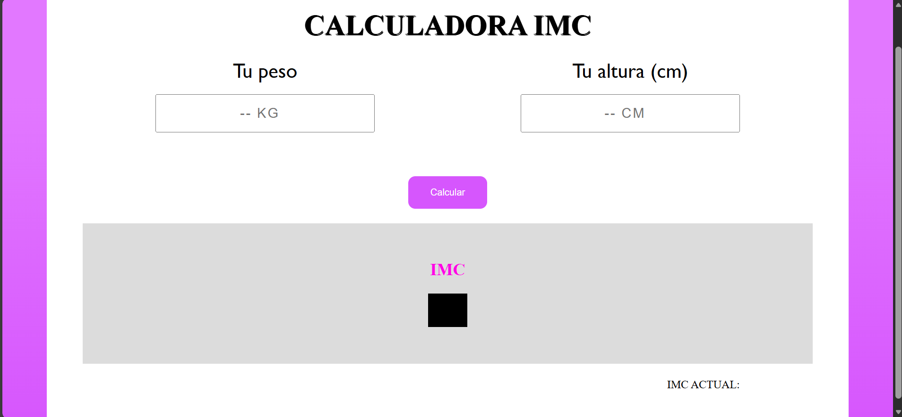
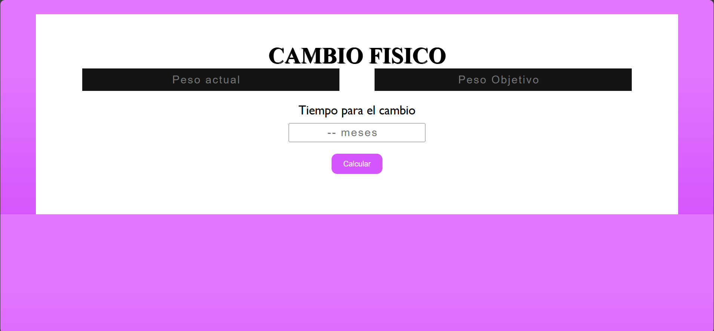
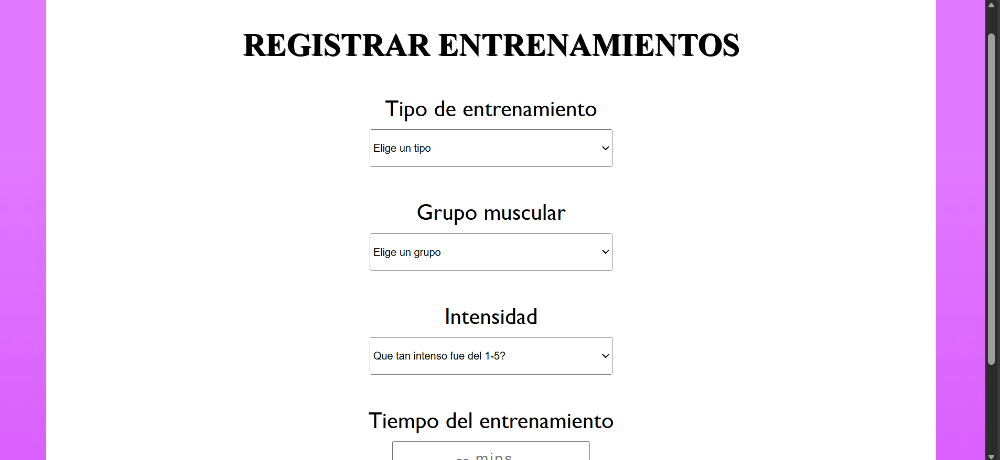
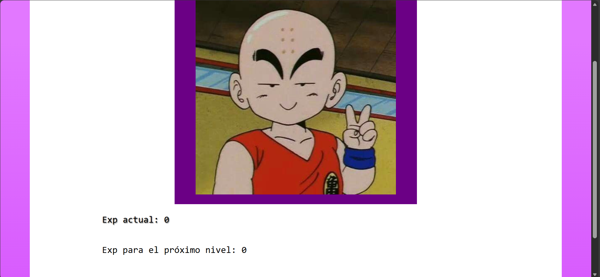
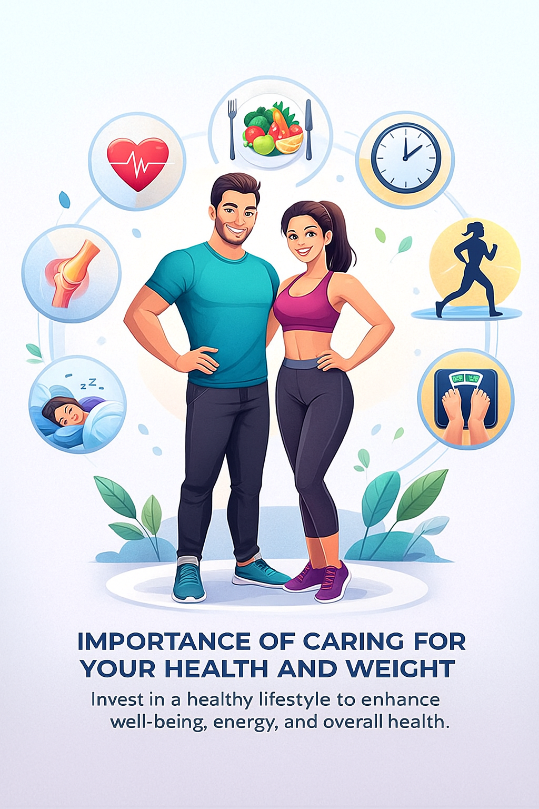

FitLive
¿Quienes somos?
FitLive es un aplicativo web diseñado para ayudarte a cuidar tu salud y especialmente motivarte a realizar actividad física y cuidar de tu salud debido a sus dinámicas y herramientas lúdicas que te enganchan e impulsan a realizar actividades para tu propio bienestar.
Es un aplicativo web creado como primera versión con proyección a futuro y busca por ahora ser una simulación que pueda aportar suficiente valor en el mercado para los interesados en utilizar la herramienta
Funcionalidades

Esta calculadora te va a permitir mantener tu atención y control sobre tu peso, mantén un peso saludable y ahorrate los cálculos molestos para conseguir tu IMC.

Aquí te motivamos todo el tiempo, elige un peso objetivo sea este mayor o menor que el el peso que tienes y un tiempo esperado en el cual conseguir este peso, aunque esto no reemplaza para nada una opinión profesional quizá podamos darte una guía de tu alimentación y ejercicio durante los posteriores meses para conseguir tu peso objetivo.

Registra tus entrenamientos, así podrás tener un registro diario, semanal y eterno de los entrenamientos que realizas, podrás almacenar tu información, el grupo muscular, tipo de entrenamiento y tiempo sobre este registro y podrás consultarlo después, y ojo, por cada entrenamiento realizado ganarás una determinada cantidad de experiencia en nuestra dinámica "Tu personaje".

Este es quizá el apartado más didáctico, puedes consultar el nivel de exp que tienes y ver en que nivel te encuentras entre los 10 niveles disponibles, por cada entrenamiento que hagas vas a ir ganando experiencia en este contador y conseguir nuevos personajes, descubrelos todos.
Importancia de cuidar tu salud y peso
Parce, cuidar tu salud y tu peso es clave porque tu cuerpo funciona mucho mejor cuando no está cargando de más ni trabajando forzado. Tener un peso estable te da más energía, te ayuda a evitar enfermedades como hipertensión o diabetes, reduce el dolor en las articulaciones —incluida tu rodilla— y te permite recuperarte más rápido de cualquier lesión. También mejora tu sueño, tu ánimo y tu rendimiento diario, porque cuando estás bien físicamente, todo lo demás fluye con más facilidad. Al final, es invertir en vivir con menos molestias, más calidad y sintiéndote más capaz en todo lo que haces.

Habitos para cuidar tu salud
1. Mantener una alimentación equilibrada ayuda a que tu cuerpo reciba los nutrientes necesarios para funcionar bien, mantener tu energía estable y evitar problemas como inflamación, fatiga o enfermedades metabólicas. Comer variado y natural siempre te mantiene más estable física y mentalmente.
2. Tomar suficiente agua mantiene tu cuerpo hidratado, mejora tu digestión, ayuda a tus articulaciones y evita dolores de cabeza, cansancio y malestar general. Estar hidratado también mejora tu concentración y tu rendimiento diario.
3. Dormir entre 7 y 9 horas permite que tu cuerpo se repare, tu cerebro procese información y tus hormonas se regulen. Dormir mal afecta tu estado de ánimo, tu energía, tu apetito y hasta tu capacidad para tomar decisiones.
4. Mover tu cuerpo todos los días, aunque sea caminando, mejora tu circulación, tu estado de ánimo y tu metabolismo. No necesitas entrenamientos extremos; lo importante es que tu cuerpo no pase todo el día en modo sedentario.
5. Reducir el estrés ayuda a que tu mente y tu cuerpo no se mantengan en alerta constante, lo cual afecta tu sueño, tus defensas y tu energía. Tomarte pausas, respirar y desconectarte de vez en cuando hace una diferencia enorme.
6. Evitar el exceso de azúcar y ultraprocesados mantiene estable tu energía y evita picos que terminan dejándote cansado, ansioso e inflamado. Mientras menos comida industrial comas, más fácil es mantener un peso saludable.
7. Mantener una buena postura reduce dolores innecesarios de espalda, cuello y hombros, y evita que con el tiempo desarrolles tensiones crónicas. Pequeños ajustes durante el día te ayudan a sentirte menos cargado.
8. Ir al médico cuando corresponde permite detectar problemas antes de que se vuelvan graves. Revisiones básicas una vez al año y exámenes cuando aparecen síntomas son clave para mantenerte al día.
9. Limitar el alcohol y evitar el cigarrillo protege tu hígado, pulmones, corazón y sistema nervioso. No se trata de dejarlo todo, sino de mantener un consumo que no afecte tu salud a largo plazo.
10. Cuidar tu salud mental es tan importante como cuidar tu cuerpo. Hablar con alguien, expresar lo que sientes y darte espacio para ti mismo evita que el estrés y la ansiedad se acumulen y afecten tu bienestar general.